tVault
Software installation, updates and licensing in one place.
New versions are signed and published safely, and customer servers update at the scheduled time only on the devices the customer approved. See at a glance, for each customer, who runs which version and when each license ends.
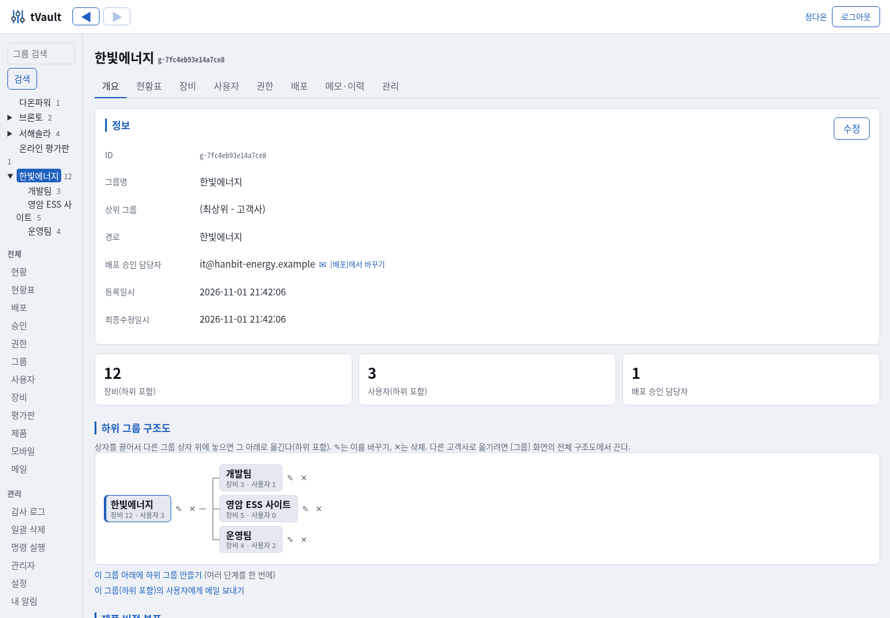
Taking the worry out of field software
As site servers and operator PCs multiply, installation, updates and license management become too much to handle by hand.
Publishing a new version changes every server at once
A customer's production server restarting suddenly during business hours is a problem. tVault widens rollouts from internal to pilot to customers with rings (deployment stages), and customers update only the devices they approved.
Logging in remotely to install at every customer
Run one installer containing an install key, and registration, service setup and first installation are all done. After that the agent handles updates and rolls itself back on failure.
No idea who uses what, or when licenses end
Grant entitlements (edition, term, expiry behavior) per customer, department, user or device, and see the entitlements actually applied and installed versions per device on one screen.
Still used after the trial ends · used by copying
Licenses are verified with signed tokens and a PC-specific value. The program itself blocks copies, expired terms and revocations, and can even order deletion on a departed employee's personal PC.
Phoning to check whether updates happened
When all approved devices are done, the contact receives a result email with the update time of each device. If some devices are switched off, an interim report is sent first.
Air-gapped sites without internet
Bring updates in with a single signed bundle file. Verification is the same as online, and licenses stay valid without the server within the offline grace period.
Release and deployment are separate
Releasing means publishing "a version that can be used"; deploying means deciding "who gets it, and when". The administrator sets a target version for each ring and widens the rollout with [Next ring].
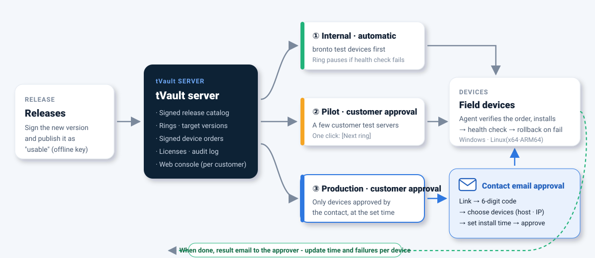
Releases
Built packages are signed with an offline key and published. No device changes yet.
Set the ring target
Set the new version on the internal test device ring. If the post-install health check fails, that ring pauses automatically.
Customer approval
Moving to a customer ring sends an approval email to the contact, who approves by choosing devices and an installation time.
Check results
Results are collected from device reports, emailed to the approver and kept in the web console.
What tVault does
Customer-centered web console NEW
Pick a customer (group) in the tree on the left, and that customer's devices, users, entitlements, deployments and notes come together in tabs. Departments (subgroups) are included, which makes it easy to handle work customer by customer.
- Customer and department tree - collapse and expand, name search, device counts including subgroups
- Overview: device and user counts, version distribution per product, deployment approvals in progress
- Devices tab: grouped by department, with host name, IP, installed version and last contact
- Script-free screens + two-step authentication (password + OTP)

Selective deployment - rings (deployment stages) NEW
Set a default behavior per product. With Hold, only devices assigned to a ring update; with Follow, devices follow new versions immediately. Each ring targets customers, departments, users or devices, with a target version and a method (automatic / customer approval).
- The ring for the most specific target applies (device > user > department > customer)
- Widen the stage with a single [Next ring] button
- Set a ring's target to an older version and only those devices roll back
- A failed post-install health check (rollback) pauses the ring automatically
- The server blocks it too - packages that are not the target are not served

Email approval by the customer's contact NEW
When a new version is set on a customer-approval ring, an email goes to the approver at that customer (or department). Without logging in, the contact opens the link, enters the 6-digit confirmation code sent to that email, then chooses devices and an installation time to approve or put on hold.
- Device table: grouped by department, with host name · IP · device name · current version
- Select per device, exclude by department - easy to tell apart even with 100+ devices
- Installation time: now, or a date and time (overnight maintenance window)
- A separate link per contact, valid for 7 days, final once decided
- If there is no contact or approval was confirmed by phone, an administrator approves on their behalf with a note

Per-device results and result emails NEW
When all approved devices finish updating, a result email goes to the approver right away, listing previous → current version, result and update time for each device. If some devices are switched off, an interim report is sent after a set time (1 hour by default), and a final report follows when everything is done.
- Counts of completed, failed and in-progress devices, with failure details
- Opening the same link again shows the result table
- Holds, expired requests and result copies sent to the administrator notification address
- Interim report timing, approval deadline and reminders adjustable in settings
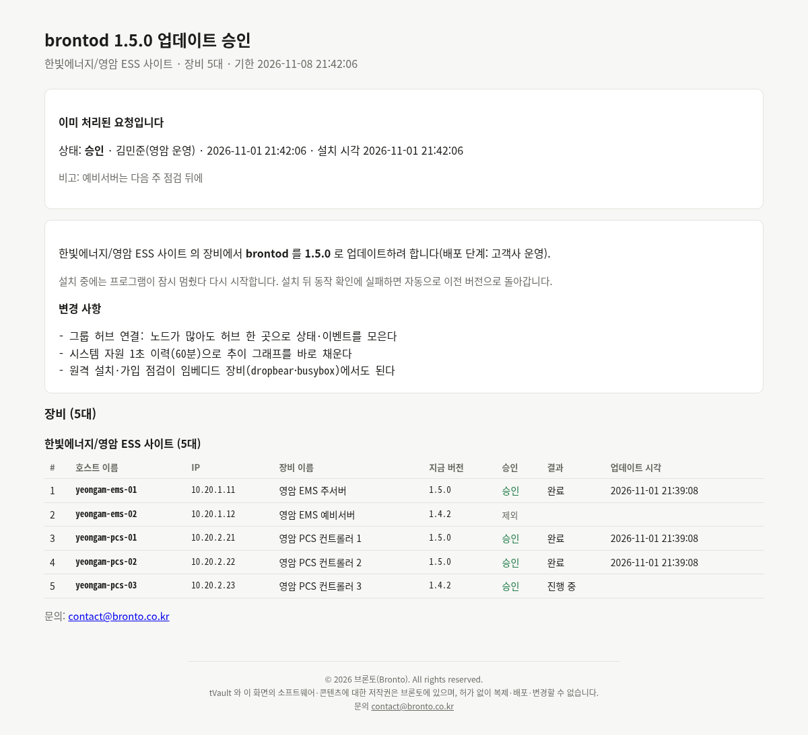
One-step install · automatic updates · automatic rollback
Run an installer whose file name contains the install key, and device registration, service registration and first installation are all done. From then on the agent checks signatures every 10 minutes and keeps to the target version.
- Install → health check → automatic rollback to the previous version on failure
- Data folders to preserve are kept during updates and removal
- Windows: run, close, update and remove from the notification area icon
- User-chosen updates: now · later · skip (required versions cannot be skipped)
- Release notes are shown as-is in the notification
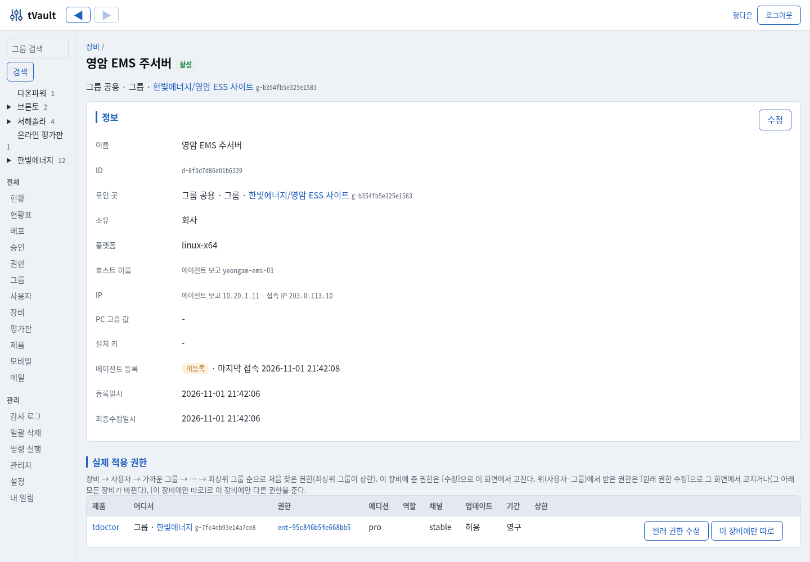
Licenses · entitlements
Define editions (Basic, Pro, etc.), features and roles per product, and grant entitlements to customers, departments, users and devices. Entitlements reach each device as a signed license token that the program checks itself.
- Term: perpetual · subscription · fixed term · trial (approval required)
- Behavior on expiry: continue (updates only stop) · downgrade edition · block launch · remove
- Offline grace period - what was paid for keeps working even if the server disappears
- A PC-specific value detects copies · revocation via a revocation list
- Employee departure: revoke entitlements, company devices become shared, personal devices are ordered to delete
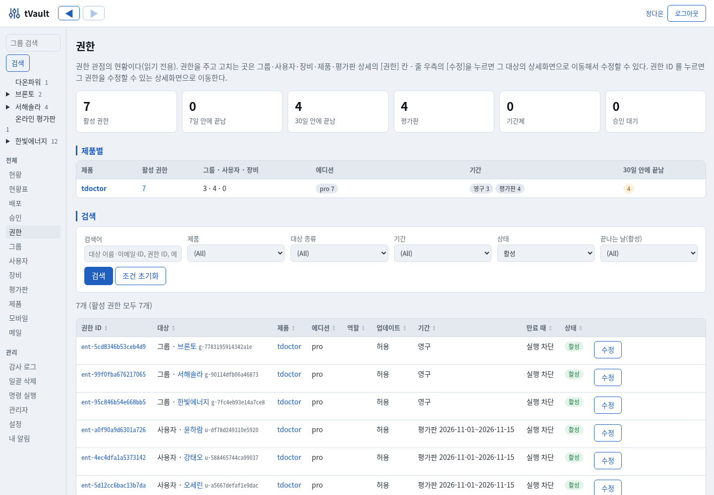
Notes on every action · audit log NEW
Actions that are hard to undo or affect customers, such as revocation, disabling devices, deployment targets and approving on someone's behalf, always require a note (reason, requester, contact details). The customer's Notes · History tab shows notes and action records at a glance.
- Customer notes - calls, visits and commitments
- Hash-chained audit log - cannot be altered later
- Approval requests: who decided, email, IP, chosen devices, installation time
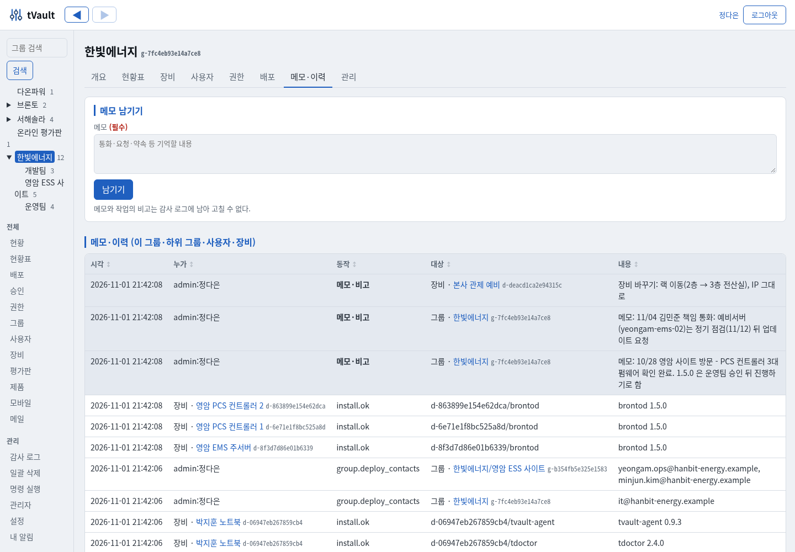
Deployments protected by signatures
Role-specific signing keys guard against attacks on the update path. Devices trust only the root of trust they first received, and install nothing unsigned even if the server address changes.
- The release key stays off the server (offline) - no fake packages even if the server is breached
- Package length and hash checks, protection against rollback to old catalogs
- Per-device deployment orders are signed too - chosen only from signed versions
- Only requests signed with the device key are accepted · lost devices can be disabled
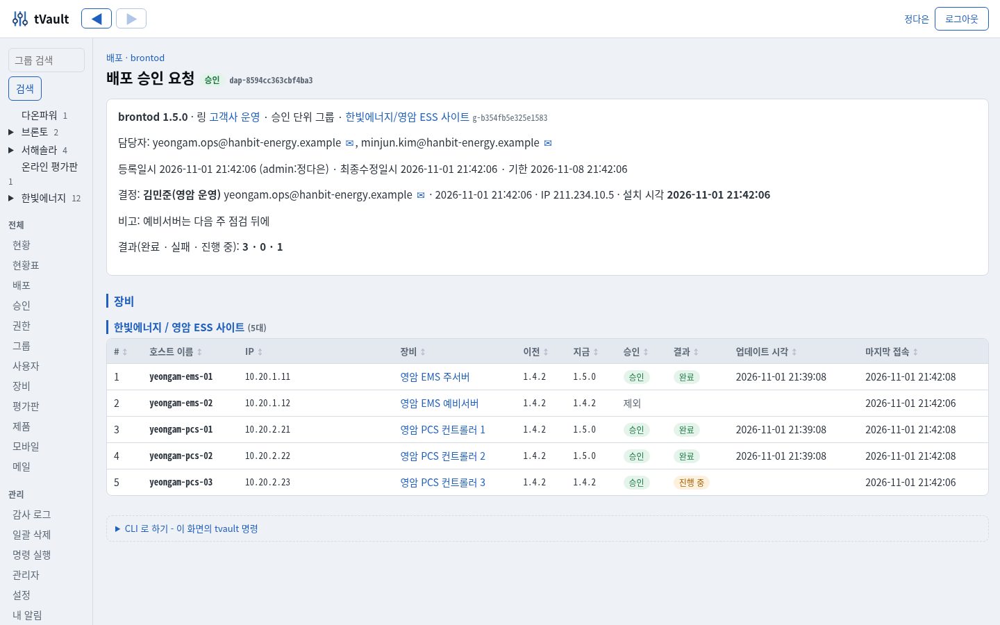
Internet trial · built-in mail NEW
A single [Free trial] button on your website takes visitors through application → email verification → automatic approval → a personal install key, with no human involved. The trial policy (edition, days) stands in for approval and is recorded in the audit log. The tVault server sends the emails itself, with no external service.
- An installer with the install key in its file name - customers just download and run it, on 1 PC within 7 days
- Blocks repeat applications from the same email or PC, with block lists for emails, domains and PCs
- Emails 3 days before and on the last day, plus in-app notices · blocked when it ends
- Trials screen: counts by status, search by referral source, installed PC and marketing consent, conversion to full license, revocation and term adjustment
- Built-in mail sending (DKIM signed) - test and notice emails; promotional emails only to those who consented, with an (Ad) label and unsubscribe link
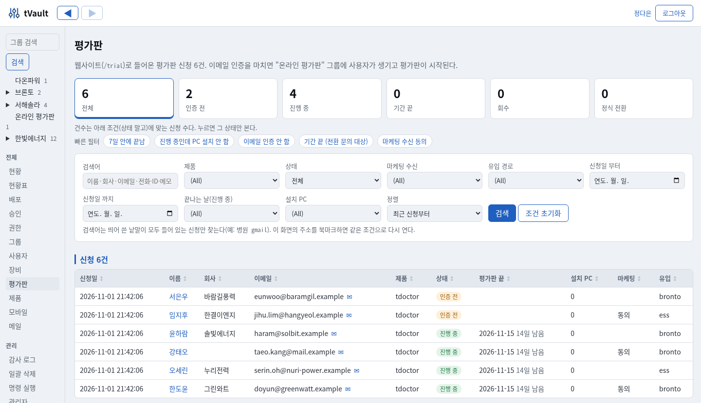
Status table · two-person approval · admin tools NEW
Expand customer → department → user → device in one table to see installed versions and update status (latest, pending, held, failed) per product. Actions that are hard to undo can be set, per group of actions, to require approval from another administrator.
- Status table: groups only · down to users · down to devices, the reason behind each cell's target, fix entitlements in place
- Two-person approval: trial and fixed-term entitlements, permanent deletion, audit log deletion, administrator accounts
- Group structure chart: drag to move (with subgroups) · rename · create many groups at once
- List → detail (read-only → [Edit]) screens, run CLI commands from the web, bulk deletion
- Mobile app (APK) registration, signature check, version management and download from the web
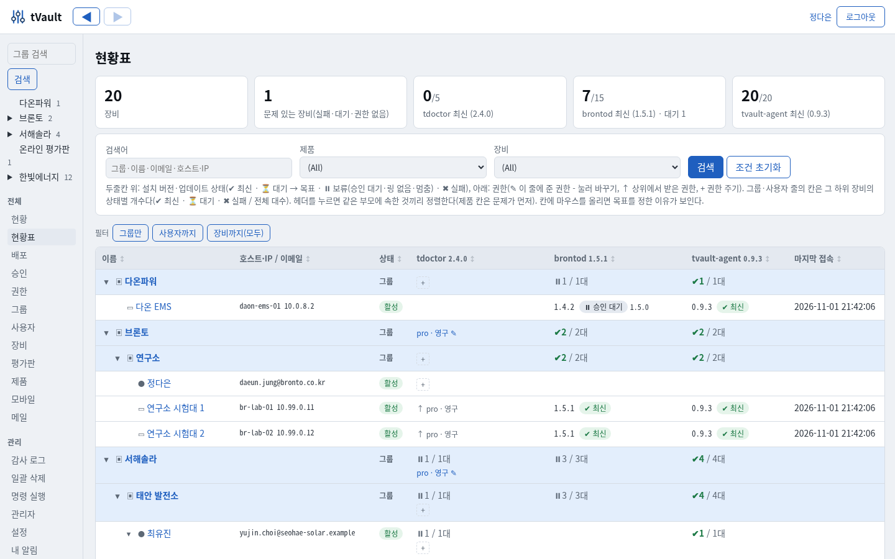
More screens
All are actual screens captured with demo data. Click to enlarge. The tVault web console is currently available in Korean.
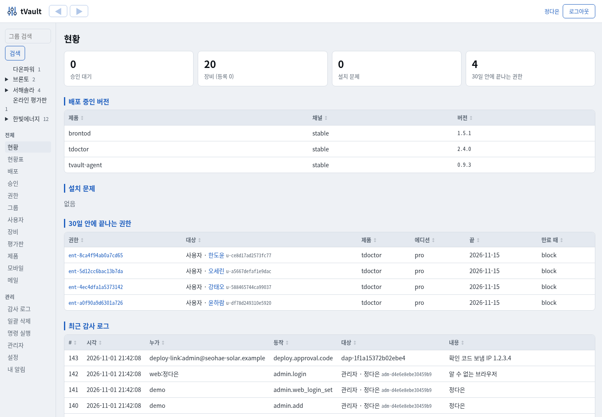
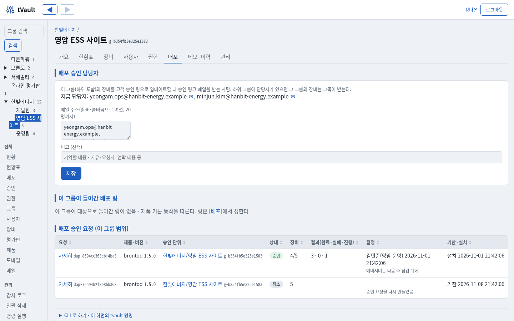
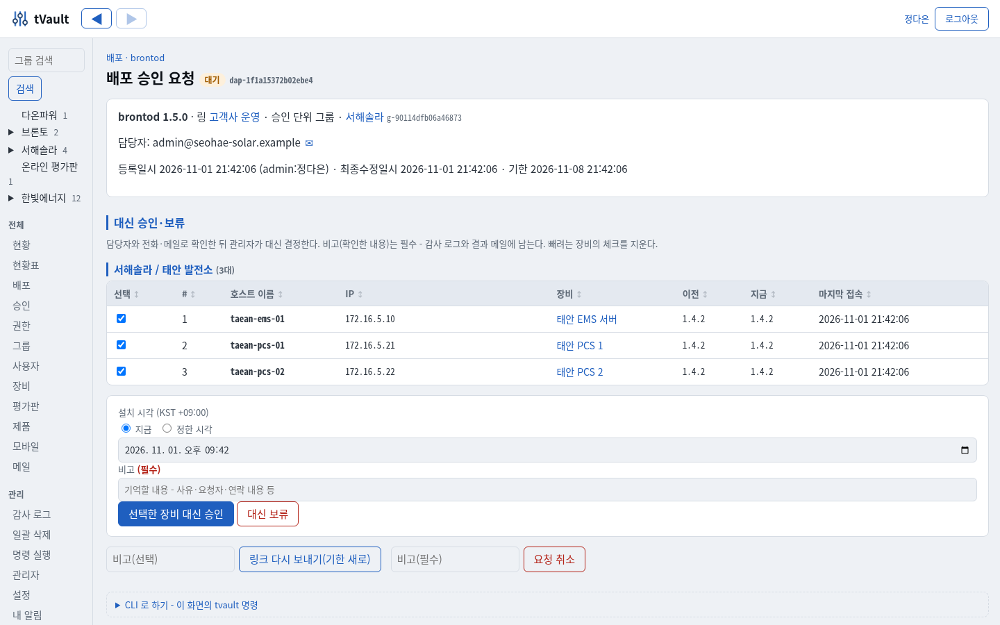
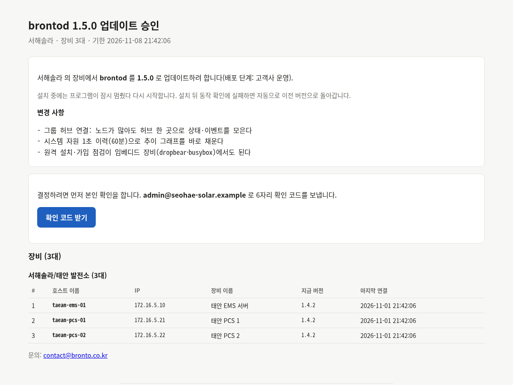
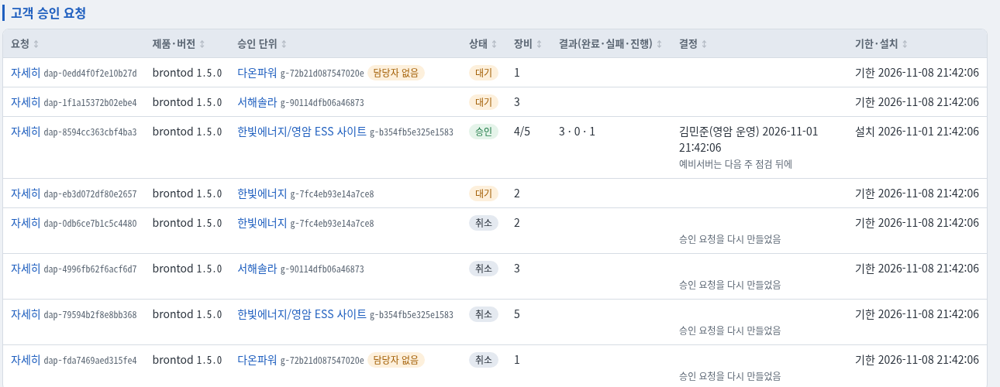
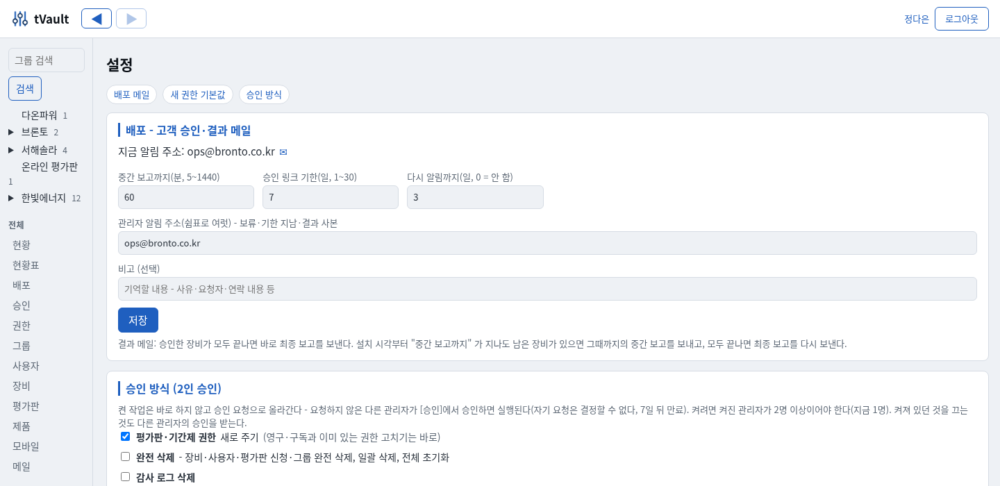
On your phone too
The web console and approval screens fit phone screens. The web console can be installed as an app on the home screen (PWA), and approval requests, deployment holds, new trials and installation failures arrive instantly as push notifications. Approve and check results even on a business trip.
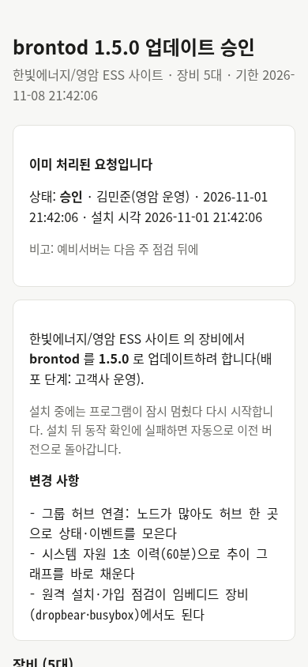
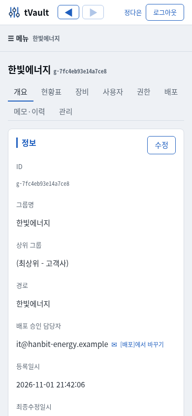
Components and supported environments
| tVault server | Linux · PostgreSQL (default) or SQLite (small deliveries) · packages in file storage · built-in mail sending (DKIM signed) |
|---|---|
| Agent | Windows (service + notification area icon) · Linux x64 · ARM64 (systemd) · the agent updates itself too |
| Web console | Customer tree and tabs, status table, deployments, approvals, entitlements, devices, trials, mail and audit log · two-person approval · command execution · password + OTP two-step authentication · install as an app on your phone (PWA) · push notifications |
| CLI | Tasks that need signing keys - building packages, release (signing), root key rotation, bundle import - are CLI only |
| Deployment | Default behavior per product (Hold · Follow) · rings (targets, target version, automatic/customer approval, pause) · signed per-device deployment orders · download enforcement on the server |
| Customer approval | Email link per contact · 6-digit confirmation code · per-device selection (host name, IP) · installation time · result emails (interim, final) |
| Licensing | Editions, features and roles · perpetual, subscription, fixed term, trial · expiry behavior · offline grace period · PC-specific value · revocation list |
| Installation path | Install key link → run installer → registration, service, first installation · signed bundle files for air-gapped networks |
| Internet trial | Public application screen · email verification · automatic approval by policy · personal install key (1 PC) · repeat application blocking · ending notice emails · conversion to full license and revocation |
| Mobile app | Android APK registration, signature (v2, v3) check, version management and web download · the app registers with an install key for a phone-only license |
| Works with | Deployment of tOps (brontod · tdoctor) and tdoctor Basic/Pro licenses · can also be delivered on the customer's own servers |
FAQ
Do customer servers change as soon as a new version is published?
No. If the product's default behavior is "Hold", only devices assigned to a ring change. On a customer-approval ring, only the devices the contact approved change, starting at the chosen time.
What if the contact's email is forwarded to someone else?
The link alone cannot make a decision. A 6-digit confirmation code is sent to the email address that received the link, and the decision screen opens only after that code is entered. Links for addresses removed from the contacts are blocked.
What if something goes wrong during an update?
If the post-install health check fails, the device returns to the previous version by itself, and that ring pauses automatically so the problem does not spread to other devices. The administrator checks the cause, leaves a note and turns it back on.
Does it work at sites without internet?
Yes. Updates come in as signed bundle files, and licenses stay valid without the server within the offline grace period. There is also a delivery option with a separate tVault server inside the customer's network.
Can trials be opened automatically from our website?
Yes. Set a trial policy (edition, days, offline grace period) per product and link your website button to the application screen, and application → email verification → installer all happen automatically. People only need to convert or revoke trials in the Trials screen. bronto's tdoctor trial runs exactly this way.
Can I use tVault alone, without tOps or tems?
Yes. With just a manifest (install location, service commands, health check method), any program can be deployed, updated and licensed with tVault.
Deployment and licensing, now in one place
Tell us how many sites you have and how you operate them, and we will walk you through the workflow on real screens.